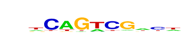
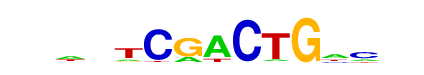

| p-value: | 1e-63 |
| log p-value: | -1.472e+02 |
| Information Content per bp: | 1.730 |
| Number of Target Sequences with motif | 113.0 |
| Percentage of Target Sequences with motif | 6.56% |
| Number of Background Sequences with motif | 362.8 |
| Percentage of Background Sequences with motif | 0.78% |
| Average Position of motif in Targets | 39.2 +/- 18.6bp |
| Average Position of motif in Background | 49.2 +/- 34.4bp |
| Strand Bias (log2 ratio + to - strand density) | -0.2 |
| Multiplicity (# of sites on avg that occur together) | 1.04 |
| Motif File: | file (matrix) reverse opposite |
| Rank | Match Score | Redundant Motif | P-value | log P-value | % of Targets | % of Background | Motif file |
| 1 | 0.834 | 1e-62 | -143.560808 | 9.06% | 1.69% | motif file (matrix) | |
| 2 | 0.889 | 1e-59 | -135.872545 | 8.36% | 1.51% | motif file (matrix) | |
| 3 | 0.718 |  | 1e-48 | -110.651243 | 34.09% | 19.11% | motif file (matrix) |
| 4 | 0.814 | 1e-42 | -98.068791 | 14.00% | 5.19% | motif file (matrix) | |
| 5 | 0.662 |  | 1e-37 | -86.501194 | 12.60% | 4.71% | motif file (matrix) |
| 6 | 0.751 | 1e-27 | -62.319282 | 4.59% | 1.00% | motif file (matrix) | |
| 7 | 0.749 | 1e-15 | -35.493276 | 1.16% | 0.09% | motif file (matrix) |